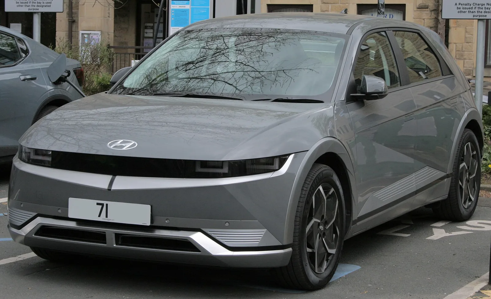
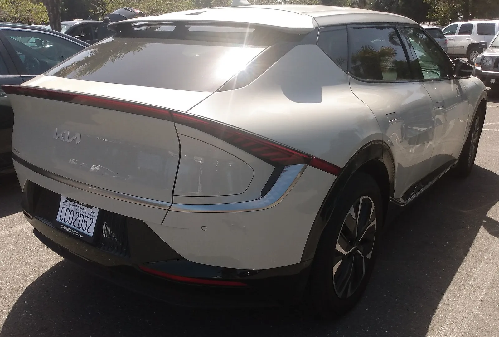
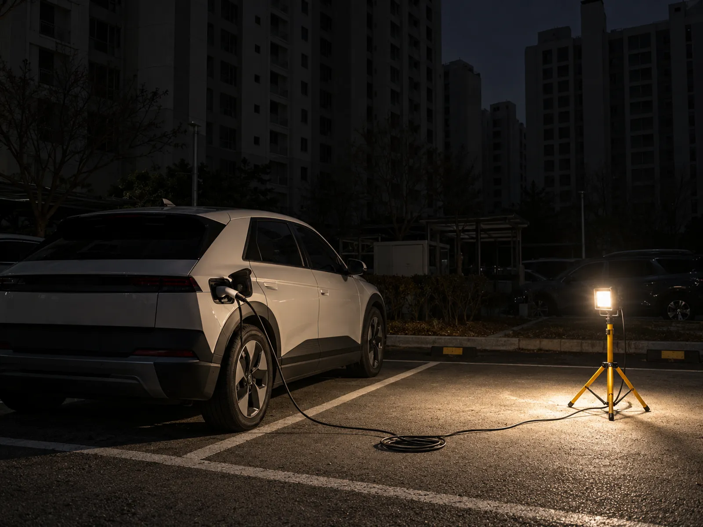
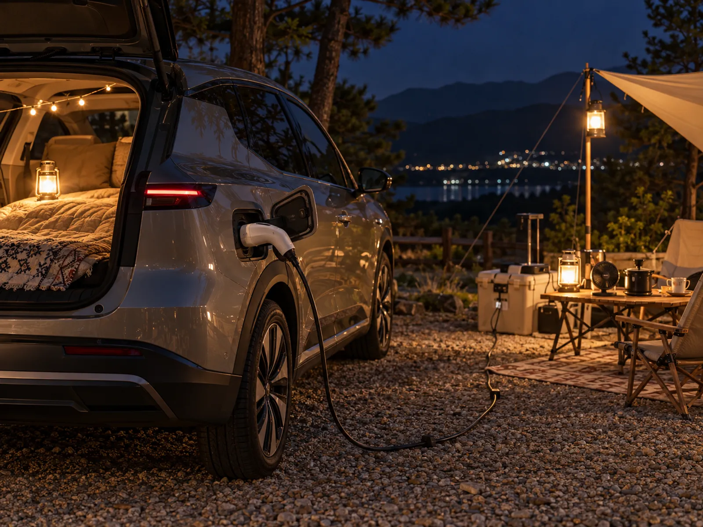
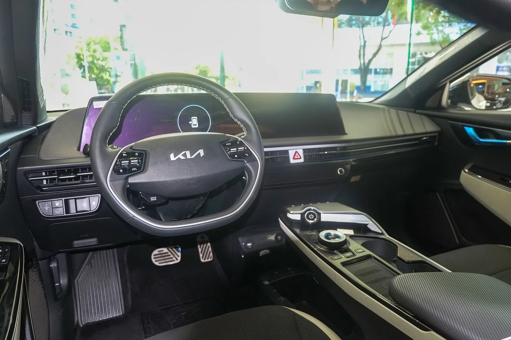
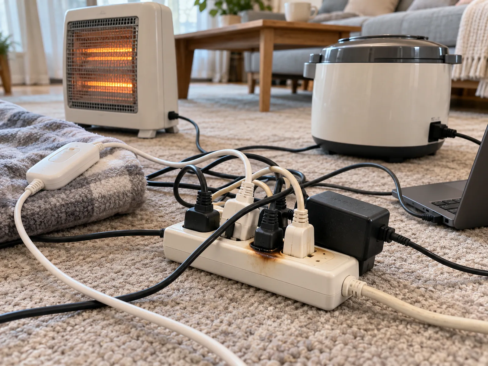
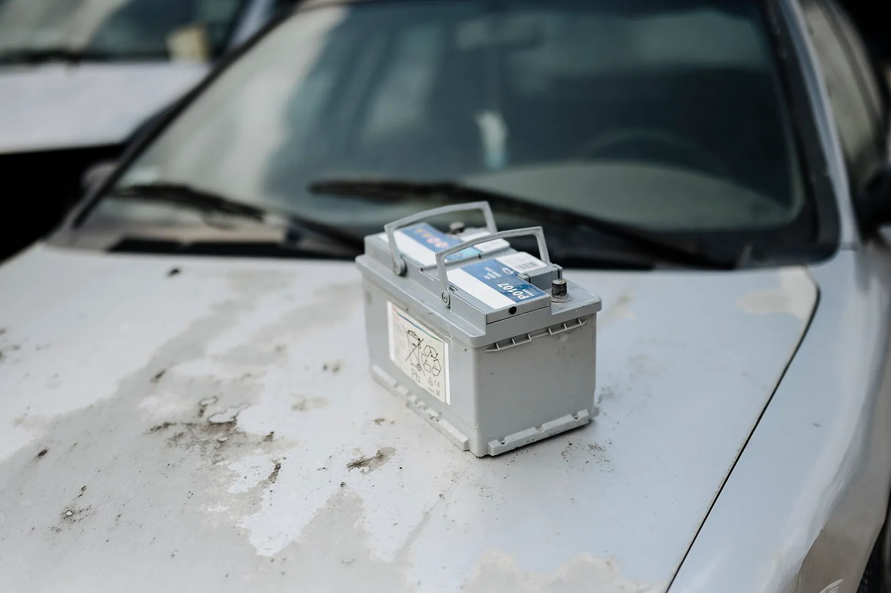
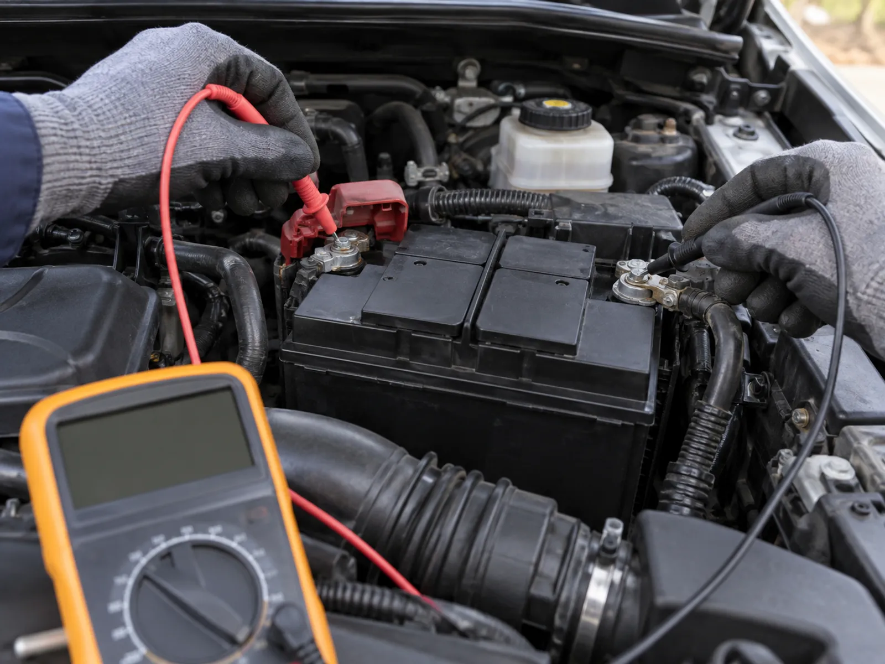
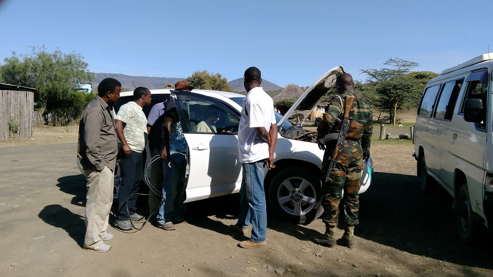
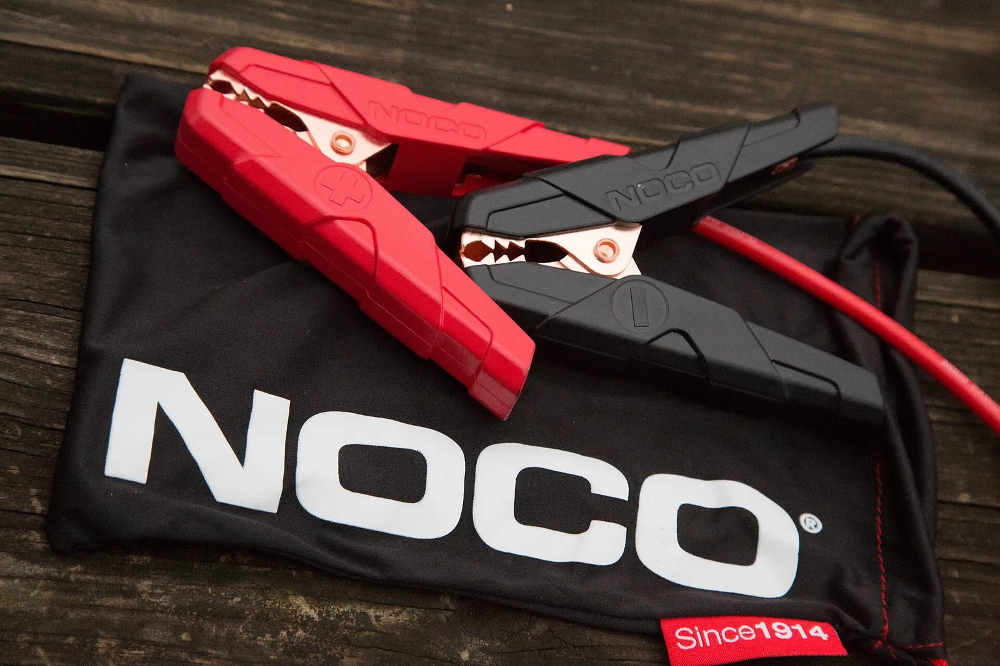

▲ 실외 V2L 3.6kW, 실내 1.9kW(보도 기준). 아이오닉 5는 출력 한도 안에서 가전을 관리해야 한다 ⓒ Wikimedia Commons / crash71100, CC0
"정전되면 차에서 전기 뽑으면 되지." 전기차 V2L(차량 전력 공급) 이야기가 나오면 으레 따라붙는 말이다. 틀린 말은 아니다. 다만 몇 시간, 며칠을 버티는지, 그리고 무엇을 동시에 꽂을 수 있는지는 배터리 용량보다 출력 한도와 방전 하한 설정이 좌우한다. 카프리즘이 제조사 공개 자료를 대조해 직접 계산표를 만들어 봤다.
이 글은 크게 두 부분이다. 앞부분은 V2L로 정전·캠핑을 버티는 계산, 뒷부분은 가을 아침 기온이 내려가기 시작하는 지금 의외로 발목을 잡는 12V 보조배터리 방전 대비다. 인버터를 이용한 일반 차박 전력 계산은 차박 인버터 용량 계산과 차박 전력 예산표에서 다뤘으므로, 여기서는 전기차 고전압 배터리를 쓰는 V2L과 정전 대비 각도에 집중한다.
1. V2L, 차종별로 얼마나 나오나 — 출력과 배터리 한눈에
V2L은 주행용 고전압 배터리의 전기를 220V 교류로 바꿔 내보내는 기능이다. 기아 EV6 사용설명서는 이를 "주행용 고전압 배터리를 이용해 여러 전자제품을 작동시키는 AC 전원 시스템"으로 설명하며, 실외(충전구 커넥터)와 실내(2열 시트 하단 콘센트) 두 방식을 안내한다. 아래 표는 공식 페이지와 보도에서 확인한 값을 카프리즘이 정리한 것이다.
| 차종 | 배터리(kWh) | V2L 출력 | 비고 |
|---|---|---|---|
| 아이오닉 5 | 63.0 / 84.0 | 실외 3.6kW, 실내 1.9kW(보도 기준·공식 미확인) | 스탠다드는 실내 V2L, 롱레인지는 실내·실외 모두 지원(2025년형 가격표·보도 기준). 실내 1.9kW와 트림별 지원 구성은 현대차 공식 설명서·사이트 재확인에서도 수치를 확인하지 못했다(설명서에는 전기 사용(V2L) 항목과 방전 제한 설정이 있다) |
| 기아 EV6 | 62.9 / 84.0 | 최대 약 3.6kW | 배터리는 기아 공식 제원 페이지, 출력은 보도 기준. 설명서에는 W 수치가 없고 16A 이하만 안내한다. 일부 해외 자료는 지역(전압)별로 1.9kW와 3.68kW를 달리 소개하므로, 해외 수치를 국내 사양에 그대로 대입하지 말 것(카프리즘은 국내 공식 근거를 확인하지 못함) |
| 기아 EV9 | 76.1 / 99.8 | 약 3.6kW(국내 보도·220V 16A급) | 해외 자료에는 3.68kW로 나오나 국내는 3.6kW로 보도됨. 기아 EV9 가격 페이지는 실내 V2L 콘센트와 실외 V2L 커넥터를 트림별로 나눠 표기한다(§1 하단). 공식 출력 수치는 미확인 |
| 폭스바겐 ID. California | 79 | 2.0kW | 해외 출시 예정 모델, 국내 판매 계획 불명 |
📍 "3.6kW"의 의미는 220V × 16A
기아 EV6 설명서는 연결 기기를 16암페어 이하로 제한하라고 안내한다. 220V 기준 16A는 약 3,520W로, 보도에서 말하는 3.6kW급과 같은 선이다. 즉 한도는 "배터리가 얼마나 남았나"가 아니라 "지금 순간에 몇 W를 당기나"로 정해진다.
| 항목 | 아이오닉 5 | EV6 | EV9 |
|---|---|---|---|
| V2L 최대 출력 수치 | 공식 미확인(보도: 실외 3.6kW·실내 1.9kW) | 설명서에 W 수치 없음, 연결 기기 16A 이하 | 공식 미확인(보도 약 3.6kW) |
| 실내·실외 구분 | 설명서에 전기 사용(V2L) 항목 있음, 실내/실외 구성은 보도 기준 | 실외 커넥터·실내 콘센트 모두 안내(설명서) | 트림별로 실내 콘센트와 실외 커넥터 구성이 나뉨(기아 가격 페이지) |
| 방전 하한 설정 | 설정 가능, 현재 충전량 이하로만 설정, 도달 시 자동 차단(현대 설명서). 설정 범위·기본값은 미확인 | 설정 가능, 도달 시 V2L 중지(설명서). 범위 미확인 | EV9 전용 설명서 확인 못함(기아 국내 설명서는 같은 설정 항목 존재) |
| 전열기구 금지 문구 | 이번에 확인 못함 | 다리미·커피포트·토스터 금지(설명서) | EV9 전용 설명서 확인 못함(기아 국내 설명서 2025년판에 전기 주전자·토스트기·다리미 금지 문구) |
기아 EV9 가격 페이지는 2WD 트림 전반에 실내 V2L 콘센트가 있고, 실외 V2L 커넥터는 트림에 따라 기본 여부가 갈리는 것으로 표시한다. 트림 구성은 연식·판매 시점에 따라 바뀔 수 있으므로 계약 전에 공식 가격 페이지에서 직접 확인하자. 아이오닉 5의 차종 특징은 아이오닉 5 시승 요약에서 볼 수 있다.

▲ 아이오닉 5 앞모습. 이 사진만으로 트림이나 V2L 구성은 확정할 수 없다 ⓒ Wikimedia Commons / DieselFordMondeo, CC BY-SA 4.0

▲ 전시장의 EV9 뒷모습. 사진으로는 트림·사양을 확정하지 않는다 ⓒ Wikimedia Commons / Ethan Llamas, CC BY-SA 4.0

▲ EV6는 실외 V2L 커넥터와 실내 콘센트를 모두 제공한다. 차종·트림별 지원 여부는 확인이 필요하다 ⓒ Wikimedia Commons / DestinationFearFan, CC BY-SA 4.0

▲ 전시장 전시차로 놓인 99.8kWh 대용량 배터리의 EV9. 배터리가 클수록 정전 대응 시간도 길어진다 ⓒ Wikimedia Commons / Matti Blume, CC BY-SA 4.0
2. 사용 가능 전력량 계산식 — 카프리즘 가정을 먼저 밝힌다
계산은 단순하다. 사용 가능 전력량(kWh) = 배터리 용량 × (시작 SOC − 방전 하한 SOC) × 변환 효율. 여기서 카프리즘이 둔 가정은 세 가지다.
✅ 계산 가정 (추정 포함)
· 방전 하한 20% — 본 기사의 계산 가정이다. 기아 EV6 설명서와 현대차 설명서 모두 하한을 설정할 수 있고 도달하면 자동 중단된다고 안내한다(현대차는 현재 충전량 이하로만 설정 가능). 다만 설정 가능 범위, 기본값 20%, 현대차의 20~100% 사용 구간은 설명서로 확인하지 못했다
· 시작 SOC 80% 또는 100% — 평소 80% 충전 습관인 운전자와 만충한 경우를 구분
· 변환 효율 85% — 고전압 배터리에서 220V 교류로 바꾸는 손실을 반영한 카프리즘의 추정치이며, 제조사 공식 수치가 아니다. 차량 자체의 대기 소모는 반영하지 않았다
| 배터리 | 80% → 20% (60%p) | 100% → 20% (80%p) |
|---|---|---|
| 63.0kWh | 32.1kWh | 42.8kWh |
| 84.0kWh | 42.8kWh | 57.1kWh |
| 99.8kWh | 50.9kWh | 67.9kWh |
예를 들어 84kWh 차량을 80%에서 20%까지 쓰면 84 × 0.6 × 0.85 = 42.8kWh다. 이 값이 이후 모든 표의 기준이 된다.
3. 정전 대비 — 하루 3.4kWh 가정으로 며칠 버티나
⚠️ 계산상 가능과 제조사 허용은 다른 문제다
이 장의 전기포트(1,500W)·인덕션(1,800W)·소형 히터·에어프라이어 예시는 출력 한도(실내 1.9kW 등)와 배터리 용량 안에서 되는지만 본 계산이다. 이와 별개로 기아 EV6 설명서는 다리미·커피포트·토스터 등 전열기구 사용을 금지한다. 제조사 설명서가 전열기구를 금지할 수 있으므로 차종별 확인이 필요하다(§6).
정전 때 우리 집에서 꼭 필요한 것만 켠다고 가정했다. 정격 소비전력과 사용 시간은 가정용 제품의 대표적 범위를 바탕으로 한 카프리즘의 가정값이므로, 실제로는 가진 제품의 라벨(정격 W)로 바꿔 계산해야 한다. 냉장고는 컴프레서가 계속 도는 것이 아니어서 평균 부하를 60W(정격 150W, 가동률 40% 가정)로 잡았다.
| 기기 | 가정 소비전력 | 하루 사용 | 하루 전력량 |
|---|---|---|---|
| 냉장고 | 평균 60W | 24시간 | 1,440Wh |
| LED 조명 4개 | 10W × 4개 | 5시간 | 200Wh |
| 선풍기 | 40W | 8시간 | 320Wh |
| 와이파이 공유기 | 12W | 24시간 | 288Wh |
| 노트북·휴대폰 충전 | 약 60W / 20W | 3시간 / 2시간 | 220Wh |
| TV | 100W | 4시간 | 400Wh |
| 전기밥솥(취사) | 800W | 30분 | 400Wh |
| 전기포트 | 1,500W | 5분 | 125Wh |
| 합계 | 약 3,393Wh (3.4kWh) |
| 배터리 | 80% → 20% | 100% → 20% |
|---|---|---|
| 63.0kWh | 약 9.5일 | 약 12.6일 |
| 84.0kWh | 약 12.6일 | 약 16.8일 |
| 99.8kWh | 약 15.0일 | 약 20.0일 |
📍 "며칠"보다 중요한 것 — 현실 보정
위 일수는 이상적인 계산값이다. 차량이 V2L을 켜 둔 동안 쓰는 대기 전력, 겨울철 배터리 효율 저하, 멀티탭에서의 전력 손실은 반영하지 않았고 확인된 수치도 없다. 실제로는 계산값의 70~80% 정도로 여유 있게 잡는 편이 안전하다(카프리즘의 보수적 권고). 또 정전이 열흘씩 이어지는 일은 드물기 때문에, 이 표는 오히려 "하루 이틀 정전에는 차 배터리가 거의 줄지 않는다"는 의미로 읽는 것이 맞다.

▲ 정전된 밤 주차장에서 차량 전력으로 조명을 켜는 장면(예시 이미지) ⓒ CarPrism (AI 생성 이미지)
4. 가전별 연속 사용 시간과 동시 사용 판정표
84kWh 차량을 80%에서 하한 20%까지 쓴 42.8kWh를 기준으로, 한 가지 기기만 연속으로 쓴다면 몇 시간인지 계산했다(시간 = 42,800Wh ÷ 소비전력).
| 기기 | 소비전력 | 연속 사용 |
|---|---|---|
| 선풍기 | 40W | 약 1,070시간 |
| 냉장고(평균) | 60W | 약 713시간(약 29.7일) |
| 전기장판(싱글) | 100W | 약 428시간 |
| TV | 100W | 약 428시간 |
| 소형 히터 | 1,200W | 약 35.7시간 |
| 전기밥솥(취사 중) | 800W | 약 53.5시간 |
| 전기포트·에어프라이어(전열기구는 제조사 금지 가능) | 1,500W | 약 28.5시간 |
| 인덕션 1구(최대 화력) | 1,800W | 약 23.8시간 |
전력량에서는 여유가 많아도 순간 출력 한도에서 막히는 경우가 훨씬 흔하다. 아래는 동시에 꽂았을 때 실내(1.9kW)·실외(3.6kW) 한도를 넘는지 정리한 판정표다. "가능"은 출력 한도 기준의 계산상 판정일 뿐, 전열기구 사용을 제조사가 금지할 수 있으니 차종별 설명서를 먼저 확인해야 한다.
| 조합 | 합계 | 실내 1.9kW | 실외 3.6kW |
|---|---|---|---|
| 전기포트 + 노트북 | 1,560W | 가능(여유 340W) | 가능 |
| 전기밥솥 + 전기포트 | 2,300W | 초과 | 가능 |
| 인덕션 + 에어프라이어 | 3,300W | 초과 | 가능하나 여유 300W뿐, 비권장 |
| 인덕션 + 포트 + 밥솥 | 4,100W | 초과 | 초과 |
✅ 냉장고 기동 전류 주의
냉장고·에어컨 같은 컴프레서 기기는 켜지는 순간 정격보다 큰 전류가 흐르는 것이 일반적이다. 다른 기기를 한도 근처까지 함께 쓰는 중에 냉장고가 가동하면 순간적으로 한도를 넘어 차단될 수 있다(카프리즘의 일반 원리 설명, 차종별 실측 수치는 확인 못함). 냉장고는 가장 먼저 연결하고 큰 기기는 따로 돌리는 순서를 권한다.
5. 캠핑 하룻밤 예산과 "이동용 하한" 정하는 법
캠핑에서는 시간이 짧은 대신 열을 쓰는 기기가 많다. 가을 차박 한 밤을 가정했다. 전기장판 100W × 8시간(800Wh), LED 조명 10W × 6시간(60Wh), 휴대폰·노트북 충전(200Wh), 선풍기 40W × 6시간(240Wh), 인덕션 1,800W × 45분(1,350Wh)으로 합계 2,650Wh다(인덕션 등 전열기구는 제조사가 금지할 수 있어 계산상 예시이며, 실제 사용 전 설명서 확인 필요). 배터리에서 빠져나가는 양은 2.65 ÷ 0.85 = 3.12kWh다.
| 배터리 | 배터리 소모 3.12kWh의 SOC 환산 |
|---|---|
| 63.0kWh | 약 5.0%p |
| 84.0kWh | 약 3.7%p |
| 99.8kWh | 약 3.1%p |
즉 하룻밤 SOC 소모는 몇 퍼센트포인트 수준이다. 캠핑에서 진짜 문제는 전기 부족이 아니라 "돌아갈 주행거리를 남겼느냐"다. 방전 하한을 20%로 둘 때와 높게 둘 때 남는 거리를 비교해 보자. 전비는 가을·히터 사용을 감안한 가정치(5.0km/kWh와 4.0km/kWh)로 두었다.
| 방전 하한 | 남는 전력량 | 5.0km/kWh일 때 | 4.0km/kWh일 때 |
|---|---|---|---|
| 20% | 16.8kWh | 약 84km | 약 67km |
| 30% | 25.2kWh | 약 126km | 약 101km |
| 40% | 33.6kWh | 약 168km | 약 134km |
기아 안내에 따르면 하한은 인포테인먼트 설정에서 직접 정할 수 있고, 도달하면 V2L이 자동으로 끊긴다. 가장 가까운 급속충전소가 40km 떨어진 곳이라면 하한은 최소 30%로 올려 두는 식으로 "충전소까지 거리 × 2 + 여유"를 기준 삼는 것을 추천한다. 캠핑장 전력과 차박 장소 규정은 가을 캠핑·차박 출발 전 점검도 함께 보자.
캠핑 가전 조합 시나리오 4가지 — 하룻밤에 SOC 몇 %p?
같은 2.65kWh짜리 한 밤이라도 가전 조합에 따라 결과가 크게 갈린다. 아래는 카프리즘 가정 소비전력으로 만든 조합표다. 계산식은 소비 Wh = Σ(W × 사용 시간), 배터리 소모 kWh = 소비 Wh ÷ 0.85(효율 가정), SOC 소모 = 배터리 소모 ÷ 배터리 용량이다. "동시 최대"는 모든 기기를 한꺼번에 켠 최악의 순간 합계다.
| 시나리오(가정 기기 W × 시간) | 소비 Wh | 동시 최대 | 63kWh SOC | 84kWh SOC | 실내 1.9kW |
|---|---|---|---|---|---|
| 업무 차박 노트북 60W×6h, 모니터 25W×6h, 조명 10W×5h, 공유기 12W×6h, 휴대폰 20W×2h | 672Wh | 127W | 약 1.3%p | 약 0.9%p | 여유 |
| 영화 차박 프로젝터 60W×3h, 스피커 20W×3h, 조명 10W×5h, 미니냉장고 평균 45W×12h, 휴대폰 20W×2h | 870Wh | 155W | 약 1.6%p | 약 1.2%p | 여유 |
| 전기장판 차박 전기장판 100W×8h, 조명 10W×6h, 휴대폰 20W×2h, 서큘레이터 30W×4h | 1,020Wh | 160W | 약 1.9%p | 약 1.4%p | 여유(전열 제품 해당 여부는 설명서 확인) |
| 조리 포함 밥솥 800W×0.5h, 포트 1,500W×0.1h, 조명 10W×5h, 휴대폰 20W×2h, TV 60W×3h | 820Wh | 2,390W | 약 1.5%p | 약 1.1%p | 동시에 켜면 초과(실외 3.6kW 이내). 전열기구는 설명서 금지 가능 |
핵심은 두 가지다. 첫째, 전기를 거의 쓰지 않는 조합은 하룻밤에 SOC 1~2%p밖에 줄이지 않는다. 둘째, 소비 전력량이 비슷해도 조리가 들어가면 동시 최대가 15배 이상 뛰어 출력 한도가 문제가 된다. 같은 가정으로 84kWh를 80%에서 20%까지 쓰면 업무 차박은 약 63.7박, 전기장판 차박은 약 42.0박 분량이라, 캠핑에서는 전기량보다 "돌아갈 주행거리"와 출력 한도가 제약이다. 겨울철 전비 하락은 전기차 겨울 주행거리 감소 비교를 함께 참고하자.

▲ 국내 전기차 충전소 사례. 캠핑 전 가장 가까운 급속충전소 위치를 확인해 하한을 정하는 것이 안전하다 ⓒ Wikimedia Commons / GTV경기도청방송국, CC BY 3.0

▲ V2L 커넥터로 차박 조명·전기장판을 쓰는 장면(예시 이미지) ⓒ CarPrism (AI 생성 이미지)
6. V2L 안전수칙 — 설명서에 적힌 것만 모았다
안전 항목은 기아 EV6 공식 사용설명서의 V2L 주의 사항을 기준으로 정리했다. 현대 차량도 방식은 비슷하지만 세부는 차종별 설명서에서 확인해야 한다.
| 항목 | 내용 |
|---|---|
| 전류 한도 | 연결 기기는 16A 이하 |
| 고출력 가전 | 에어컨·세탁기·건조기 등 사용 금지로 안내 |
| 전열기구 금지 | 다리미·커피포트·토스터 등 전열기구는 차량 안에서 사용 금지(화재·부상 우려). 전기포트·인덕션·히터류도 차종별 설명서 확인 필요 |
| 연장선 | 꼬이거나 겹친 상태로 사용 금지 |
| 멀티탭 | 멀티탭을 여러 개 연결(문어발) 금지 |
| 의료기기 | 중단되면 안 되는 연속 전원 필요 의료기기 연결 금지 |
| 기상 | 낙뢰 위험이 있을 때 사용 금지 |
| 방전 하한(현대 설명서) | 방전 제한량은 현재 배터리 충전량 이하로만 설정 가능, 충전량이 설정값에 도달하면 V2L이 자동 차단 |
| 자동 중단 | 하한 도달, 과소비 전력, 커넥터 과열, 커넥터 스위치 OFF, 실내 사용 중 충전구 열림 시 중단 |

▲ EV6 실내. 실내 V2L 콘센트는 2열 시트 하단에 있으며 사진은 운전석 쪽 모습이다 ⓒ Wikimedia Commons / Ethan Llamas, CC BY-SA 4.0

▲ 멀티탭 하나에 가전을 몰아 꽂은 문어발 연결의 위험 장면. 설명서는 멀티탭 겹쳐 꽂기를 금지한다(예시 이미지) ⓒ CarPrism (AI 생성 이미지)
✅ 정전·태풍 대비 사전 점검표 (카프리즘 권고)
· 가전 라벨의 정격 소비전력(W)을 적어 두고 합계가 실내·실외 한도 안인지 계산해 둔다
· 장시간 켤 기기(냉장고·공유기·조명) 목록과 큰 기기(밥솥·포트 등) 목록을 나눠 둔다
· 정격 16A급 연장선 1개를 풀어서 쓸 수 있게 준비(멀티탭 겹쳐 꽂기 금지)
· 방전 하한은 가장 가까운 급속충전소까지 거리의 2배 + 여유로 정해 둔다
· 충전구 열림 여부, 커넥터 스위치 상태 등 자동 중단 조건을 설명서에서 확인
· 휴대용 배터리·손전등 등 V2L 없이 쓸 수 있는 보조 수단도 함께 준비
· 예보가 나오면 만충하고, 정전 해소 뒤 12V 상태와 READY 진입을 확인
✅ 정전 대비 사용 순서
· 1단계: 평소 충전 습관을 80%로 하더라도 폭풍·태풍 예보 시에는 만충해 둔다
· 2단계: 인포테인먼트에서 방전 하한을 이동 거리에 맞춰 설정
· 3단계: 냉장고 → 조명·통신 → 큰 가전 순서로 연결하고 합계 W를 계산
· 4단계: 실내 사용 시 충전구 도어를 열지 않는다. 연장선은 풀어서 펼쳐 쓴다
· 5단계: 정전 해소 후 차량이 정상 시동(READY) 되는지 확인
7. 가을철 12V 보조배터리 — 방전 원인과 대비
V2L을 아무리 잘 써도 차가 안 움직이면 소용이 없다. 전기차를 포함한 모든 차량의 시동·계기판·문 잠금은 별도의 12V 보조배터리가 담당한다. 현대해상 교통기후환경연구소가 2022년 3월~2024년 2월 전기차 긴급출동을 분석한 보도에서는 겨울철 전기차 긴급출동 중 배터리 충전 요청이 24.1%였다(견인 29.6%, 타이어 펑크 24.7%). 같은 보도에서 내연기관차를 포함한 전체 차량의 겨울철 긴급출동은 배터리 충전 요청이 58.1%로, 전기차 비중이 훨씬 낮았다. 같은 보도는 최근 출시 차량에는 12V 충전 상태가 낮으면 고전압 배터리로 자동 충전해 방전을 막는 기능이 들어간 경우가 많다고 설명한다.

▲ 교체나 점검을 위해 꺼낸 12V 배터리. 가을·겨울에는 약해진 배터리가 먼저 드러난다 ⓒ Wikimedia Commons / Shixart1985, CC BY 2.0

▲ 12V 배터리 단자를 멀티미터로 점검하는 장면(예시 이미지) ⓒ CarPrism (AI 생성 이미지)
| 원인 | 상황 | 대비 |
|---|---|---|
| 장기 주차 | 일주일 이상 방치(연휴·출장) | 주 1회는 30분 이상 주행 또는 READY 상태 유지 |
| 블랙박스 상시 녹화 | 저전압 차단이 약하거나 꺼져 있음 | 차단 전압·타이머 점검 (블랙박스 방전 관리) |
| 배터리 노후 | 3~5년 이상 사용, 시동 지연·계기판 깜빡임 | 교체 신호 점검 (12V 배터리 교체 신호) |
| 기온 하락 | 한랭한 아침 최저기온 | 겨울 전압 관리 (겨울철 배터리 전압 관리) |
| 충전 계통 이상 | ICCU·LDC 이상으로 12V 충전 불가 | 경고 메시지 시 즉시 안전한 곳에 정차 |
충전 계통 이상은 2023년 7월 경향신문 보도에서 ICCU 과전류가 LDC 손상으로 이어져 12V가 충전되지 않고 주행 중 출력이 떨어진 사례(당시 국내 34건 보도)가 소개됐다. 보도에 따르면 경고 이후 20~30분 정도 주행이 가능했다고 한다. 이후 2024년 12월 아이오닉 5·EV6 등 약 17만 8천 대 규모의 ICCU 후속 리콜(3월 리콜에 이은 것)이 시행됐으나, 리콜 이후에도 증상이 재발했다는 보도가 이어지고 있다(2026년 1월 보도 등). 이 리콜 보도 대상에 EV9는 포함되지 않았으며, 그 외 차종의 대상 여부는 차종별 리콜 공지로 확인해야 한다.
| 정지 전압(시동 끈 뒤 수 시간) | 대략적 충전 상태 | 판단 |
|---|---|---|
| 12.6V 이상 | 거의 100% | 양호 |
| 12.4V 전후 | 약 75% | 주행 후 재측정 |
| 12.2V 전후 | 약 50% | 충전 필요 |
| 12.0V 이하 | 25% 이하 | 방전 직전, 점검·교체 |
참고로 AGM 배터리는 완충 직후 12.8V 안팎으로 위 표보다 약간 높게 나올 수 있다.
| 시점 | 할 일 | 이유 |
|---|---|---|
| 월 1회 | 시동 직후 계기판 경고·READY 진입 반응 확인, 가능하면 정지 전압 측정 | 전압 하락의 초기 징후 포착 |
| 가을 초입(첫 쌀쌀한 아침 전) | 정지 전압 측정, 점프 스타터 충전 상태 확인 | 기온 하락 전에 약한 배터리를 먼저 거르기 |
| 1주일 이상 장기 주차 전 | 블랙박스 저전압 차단 설정 확인, 출발 전 전압 확인 | 상시 전원 소모와 자연 방전 누적 |
| V2L·장시간 공회전(READY) 사용 직후 | 다음 시동·계기판 정상 여부 확인 | 장시간 사용 뒤 12V 상태 변화 확인 |
| 3년차 이후 | 연 1회 정비소에서 배터리 상태 점검 | 노후 배터리 교체 시점 판단(교체 기준은 차종·배터리 종류별로 다름) |
겨울을 앞두고 고전압 배터리까지 함께 관리하려면 전기차 겨울철 배터리 관리법도 참고할 만하다.
📍 리튬 12V 장착 차종은 이 표를 쓰지 말 것
일부 차종은 12V 배터리로 리튬 계열을 쓰는 것으로 알려져 있다. 이 표는 일반 납산 기준의 통설이므로, 장착 배터리 종류는 설명서나 정비소에서 확인하고 그에 맞게 점검해야 한다.

▲ 방전은 어디서든 일어난다. 점프 도구가 없으면 도움을 기다려야 한다 ⓒ Wikimedia Commons / Alexandra Cadet, CC BY-SA 4.0
8. 방전됐을 때 — 비상 시동과 점프 스타트, 예방 체크리스트
기아 하이브리드 사용설명서는 12V 방전 시 스티어링 휠 왼쪽 「12V BATT RESET」 버튼을 누르고 15초 이내에 시동을 걸도록 안내한다. 이후 READY 상태를 약 30분 유지해야 보조배터리가 충전되며, 충전이 충분하지 않은 채 버튼을 반복해 누르면 오히려 과방전되어 점프 스타트가 필요하다고 경고한다. 이는 하이브리드 차종 설명서이므로 전기차는 차종별 사용설명서에서 같은 기능 유무를 확인해야 한다. 점프 케이블 연결 순서와 극성은 점프 스타트 직접 하는 법에 정리해 두었다.

▲ 휴대용 점프 스타터는 다른 차 없이 혼자 시동을 걸 수 있는 방전 대비 도구다 ⓒ Wikimedia Commons / Tony Webster, CC BY 2.0
✅ 가을 12V 방전 대비 체크리스트
· 휴대용 점프 스타터 또는 점프 케이블을 트렁크에 비치하고 충전 상태 확인
· 차량 설명서에서 비상 시동 절차와 점프 단자 위치를 미리 확인
· 장기 주차 예정이면 출발 전 12V 상태와 블랙박스 저전압 차단 설정 점검
· 전기차는 V2L을 쓴 뒤 정상 시동과 계기판 경고를 확인
· 긴급출동 연락처(보험사·제조사)를 휴대폰에 저장해 두기
전기차의 고전압 배터리 관리와 정전 시 전력 활용을 더 넓게 보려면 V2G 배터리 전력 판매 기사도 참고할 만하다.
9. 요약
V2L 정전 대비의 핵심은 용량이 아니라 출력과 하한 설정이다. 아이오닉 5 기준 실외 3.6kW·실내 1.9kW 한도 안에서 합계 소비전력을 관리해야 하며, 84kWh 차량은 80%에서 20%까지 약 42.8kWh를 쓸 수 있어 하루 3.4kWh 가정 부하를 열흘 안팎 감당하는 계산이다(카프리즘 추정, 효율 85% 가정).
하한은 이동 거리로 정한다. 충전소까지 거리의 두 배와 여유를 남기도록 20~40% 사이에서 직접 설정하고, 연장선·멀티탭·의료기기 등 설명서 금지 항목은 지킨다.
12V 보조배터리는 가을부터 점검한다. 장기 주차·블랙박스·노후가 주범이므로 점프 스타터를 비치하고 비상 시동 절차를 미리 확인해 두자.